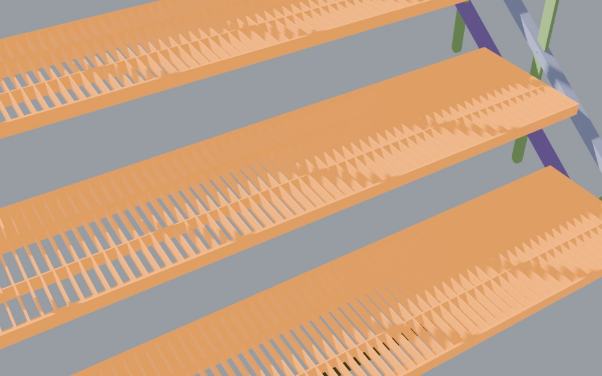
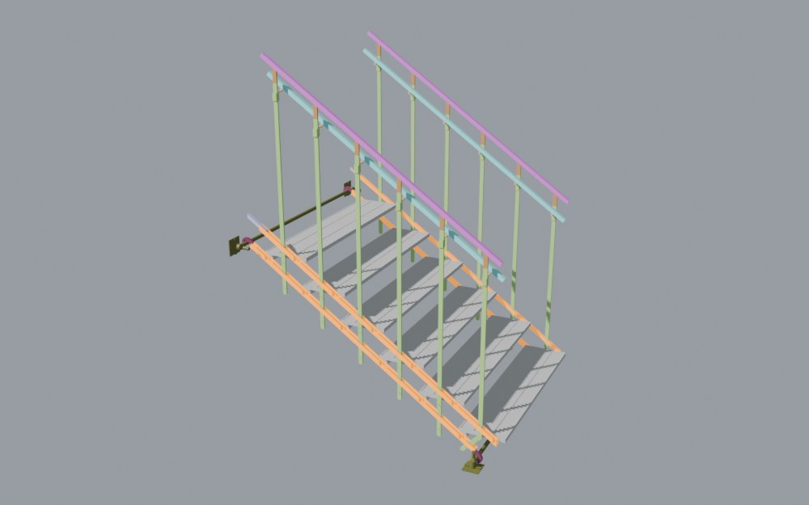
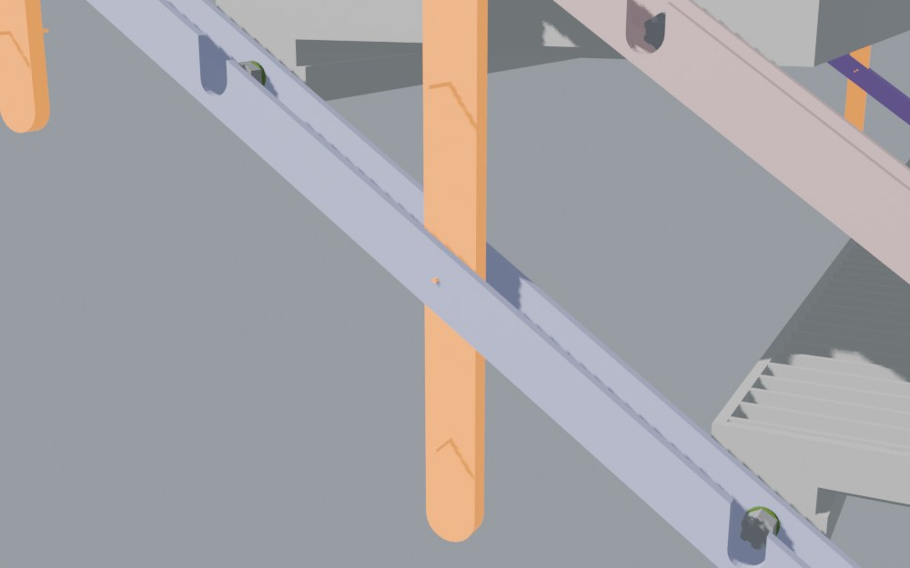
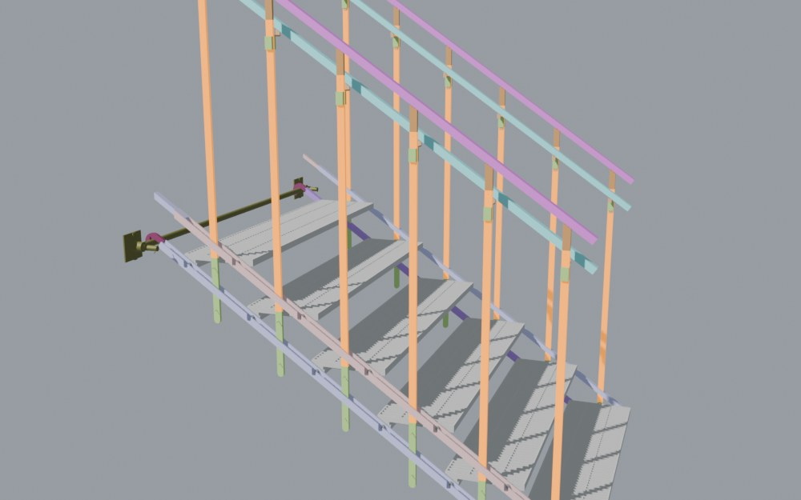
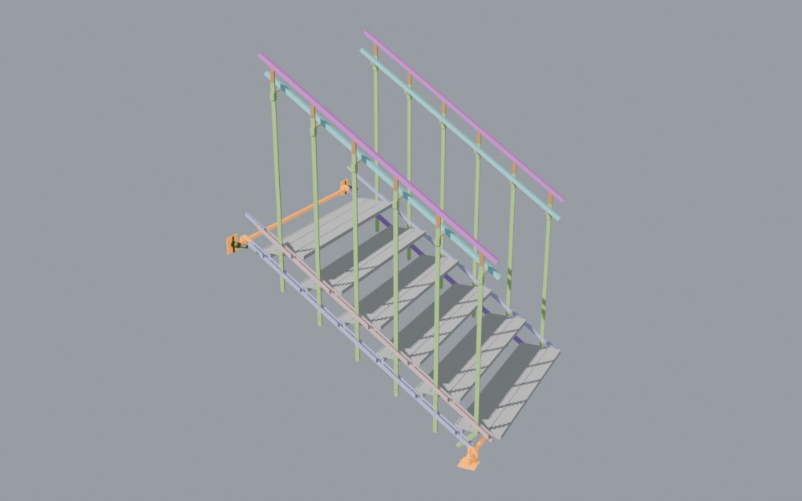
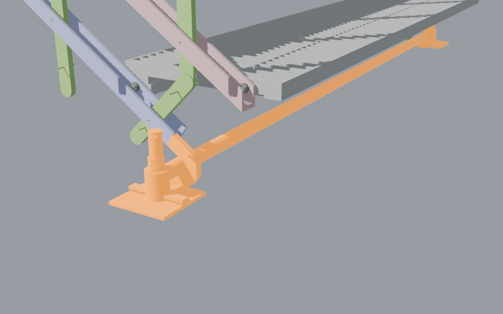
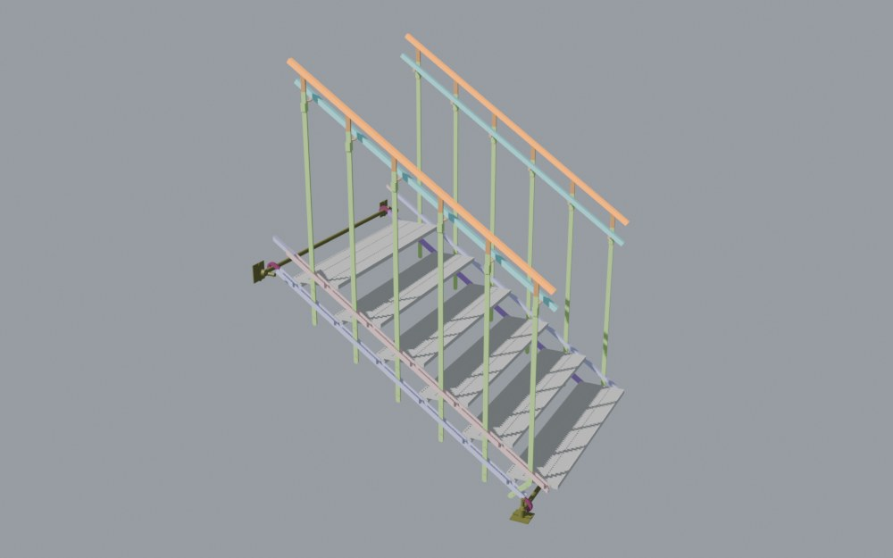
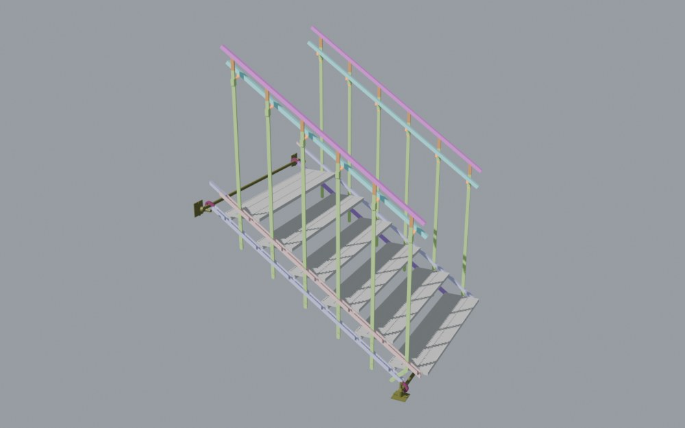
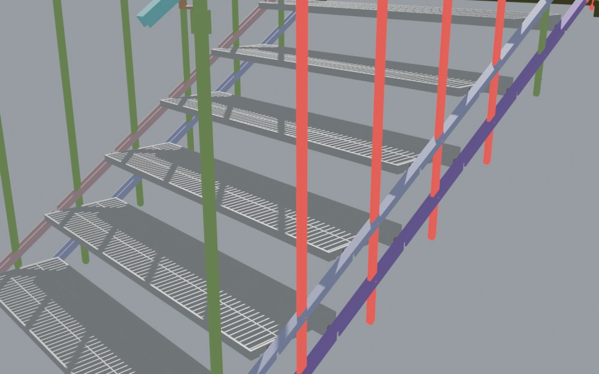
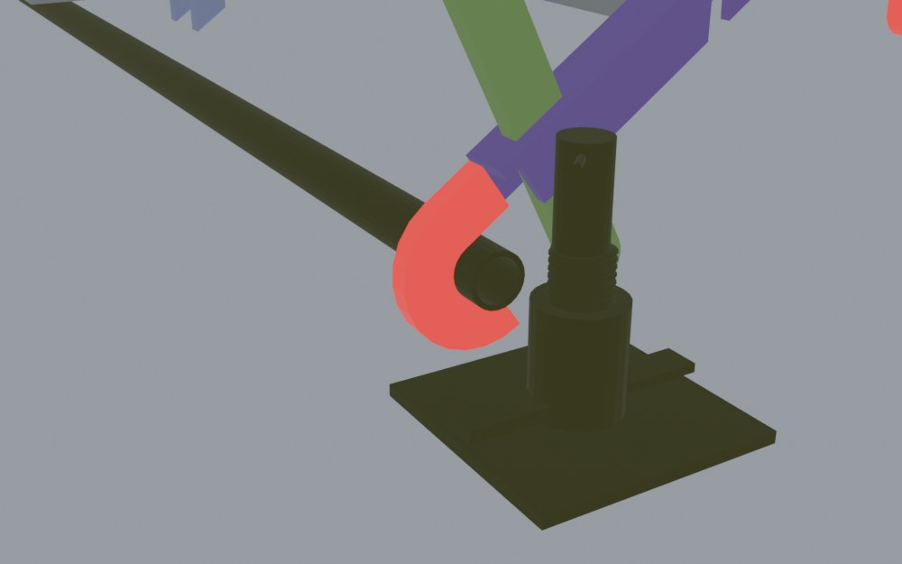

<title>Stair Unit Change Brief</title>
<link rel="preconnect" href="https://fonts.googleapis.com">
<link rel="stylesheet" href="https://fonts.googleapis.com/css2?family=Barlow+Semi+Condensed:wght@500;600;700&family=IBM+Plex+Mono:wght@400;500&family=IBM+Plex+Sans:wght@400;500;600&display=swap">
<style>
:root {
  --paper:#EFF2F2; --surface:#FFFFFF; --ink:#15202A; --ink2:#4B5966; --rule:#D3DADE; --soft:#E6EBED;
  --accent:#1E5A86; --accentbg:#E1ECF4; --new:#C2410C; --newbg:#FDEBDD; --old:#8A96A0;
  --pass:#2F7A4F; --passbg:#E2F1E7; --warn:#9A620E; --warnbg:#FBEFD8; --fail:#B42318; --failbg:#FBE3E0;
  --display:"Barlow Semi Condensed","Arial Narrow",system-ui,sans-serif;
  --body:"IBM Plex Sans",system-ui,-apple-system,"Segoe UI",sans-serif;
  --mono:"IBM Plex Mono",ui-monospace,"Cascadia Mono",Consolas,monospace;
}
@media (prefers-color-scheme: dark) {
  :root:not([data-theme="light"]) {
    --paper:#0E151B; --surface:#152029; --ink:#E3E9ED; --ink2:#9DACB8; --rule:#27353F; --soft:#1B2833;
    --accent:#7DB7E3; --accentbg:#16283A; --new:#FB923C; --newbg:#3A2112; --old:#6B7985;
    --pass:#6CC790; --passbg:#17301F; --warn:#E6B45A; --warnbg:#382B12; --fail:#FF8C80; --failbg:#3A1B18; color-scheme:dark;
  }
}
:root[data-theme="dark"] {
  --paper:#0E151B; --surface:#152029; --ink:#E3E9ED; --ink2:#9DACB8; --rule:#27353F; --soft:#1B2833;
  --accent:#7DB7E3; --accentbg:#16283A; --new:#FB923C; --newbg:#3A2112; --old:#6B7985;
    --pass:#6CC790; --passbg:#17301F; --warn:#E6B45A; --warnbg:#382B12; --fail:#FF8C80; --failbg:#3A1B18; color-scheme:dark;
}
* { box-sizing:border-box; }
body { background:var(--paper); color:var(--ink); font:15.5px/1.6 var(--body); margin:0; padding-inline:16px; padding-block:28px 64px; }
.wrap { max-width:1120px; margin:0 auto; display:grid; gap:34px; }
h1,h2,h3 { font-family:var(--display); text-wrap:balance; margin:0; letter-spacing:.01em; }
h1 { font-size:clamp(34px,5vw,52px); line-height:1.02; }
h2 { font-size:27px; font-weight:600; }
h3 { font-size:21px; font-weight:600; line-height:1.15; }
p { margin:0; max-width:72ch; }
a { color:var(--accent); }
a:focus-visible { outline:2px solid var(--accent); outline-offset:2px; }
.mono { font-family:var(--mono); font-variant-numeric:tabular-nums; }
.eyebrow { font:600 12px/1 var(--mono); letter-spacing:.12em; text-transform:uppercase; color:var(--accent); }
header.top { display:grid; gap:12px; }
header.top p { color:var(--ink2); font-size:16.5px; }
.result { display:flex; flex-wrap:wrap; gap:0; border:1px solid var(--rule); background:var(--surface); }
.result div { flex:1 1 180px; padding:12px 16px; border-right:1px solid var(--rule); display:grid; gap:2px; }
.result div:last-child { border-right:0; }
.result span { font-size:12.5px; color:var(--ink2); }
.result b { font:600 23px/1.15 var(--display); font-variant-numeric:tabular-nums; }
.result b s { color:var(--ink2); font-weight:500; font-size:18px; margin-right:6px; }
section { display:grid; gap:16px; }
section > h2 { border-top:2px solid var(--ink); padding-top:12px; }
.rules { margin:0; padding:0; list-style:none; display:grid; grid-template-columns:repeat(auto-fit,minmax(240px,1fr)); gap:10px; counter-reset:r; }
.rules li { background:var(--surface); border:1px solid var(--rule); padding:12px 14px; font-size:14.5px; }
.rules li b { display:block; font-family:var(--display); font-size:17px; font-weight:600; }
/* figures */
.figs { display:grid; grid-template-columns:repeat(auto-fit,minmax(min(100%,460px),1fr)); gap:16px; }
.fig { margin:0; background:var(--surface); border:1px solid var(--rule); }
.fig:first-child { grid-column:1 / -1; }
.shot { position:relative; }
.shot img { width:100%; height:auto; display:block; }
.mk { position:absolute; transform:translate(-50%,-50%); width:28px; height:28px; border-radius:50%; background:var(--accent); color:#fff;
      font:600 13px/28px var(--mono); text-align:center; text-decoration:none; box-shadow:0 0 0 3px rgba(255,255,255,.85); }
.mk.new { background:var(--new); }
.mk:hover, .mk:focus-visible { transform:translate(-50%,-50%) scale(1.15); outline:none; }
.fig figcaption { padding:9px 12px; font-size:13.5px; color:var(--ink2); border-top:1px solid var(--rule); }
.fig figcaption b { color:var(--ink); font-family:var(--mono); font-weight:500; margin-right:6px; }
.key { display:flex; flex-wrap:wrap; gap:14px; font-size:13px; color:var(--ink2); align-items:center; }
.key i { display:inline-block; width:14px; height:14px; border-radius:50%; vertical-align:-2px; margin-right:6px; }
/* summary table */
.tw { overflow-x:auto; border:1px solid var(--rule); background:var(--surface); }
table { border-collapse:collapse; width:100%; font-size:14px; }
th, td { padding:8px 12px; border-bottom:1px solid var(--rule); text-align:left; vertical-align:top; }
thead th { font:600 11.5px/1.2 var(--mono); letter-spacing:.06em; text-transform:uppercase; color:var(--ink2); background:var(--soft); }
tbody tr:last-child > * { border-bottom:0; }
tbody th { font-weight:500; }
td.strong { font-weight:600; }
/* change cards */
.cards { display:grid; gap:14px; }
.card { background:var(--surface); border:1px solid var(--rule); padding:16px 18px; display:grid; gap:12px; scroll-margin-top:16px; }
.card:target { box-shadow:0 0 0 2px var(--accent); }
.card header { display:flex; gap:12px; align-items:center; }
.num { flex:none; width:36px; height:36px; border-radius:50%; background:var(--accent); color:#fff; font:600 16px/36px var(--mono); text-align:center; }
.meta { color:var(--ink2); font-size:13px; }
.nowto { display:grid; grid-template-columns:1fr 1.5fr; gap:10px; }
.nowto > div { padding:10px 12px; display:grid; gap:4px; min-width:0; }
.now { background:var(--soft); }
.to { background:var(--newbg); }
.nowto span, .how > span { font:600 11px/1 var(--mono); letter-spacing:.1em; text-transform:uppercase; color:var(--ink2); }
.to span { color:var(--new); }
.how ul { margin:6px 0 0; padding-left:20px; display:grid; gap:3px; }
.refs { display:grid; grid-template-columns:1fr 1fr; gap:8px; }
.refs figure { margin:0; border:1px solid var(--rule); background:var(--paper); }
.refs img { width:100%; height:auto; display:block; }
.refs figcaption { font:500 12px/1 var(--mono); color:var(--ink2); padding:7px 9px; letter-spacing:.04em; }
@media (max-width: 640px) { .refs { grid-template-columns:1fr; } }
.tagc { font:600 11px/1 var(--mono); letter-spacing:.06em; text-transform:uppercase; color:var(--warn); background:var(--warnbg); padding:4px 7px; vertical-align:middle; margin-left:6px; }
.card.consider { border-style:dashed; }
.cnote { background:var(--warnbg); padding:10px 12px; font-size:14px; max-width:none; }
.st.none, .st.site { color:var(--ink2); background:var(--soft); }
.st.cond { color:var(--accent); background:var(--accentbg); }
.whyload { display:grid; grid-template-columns:1fr 1fr; gap:10px; }
.whyload > div { border:1px solid var(--rule); padding:10px 12px; display:grid; gap:6px; align-content:start; min-width:0; }
.whyload > div > span { font:600 11px/1 var(--mono); letter-spacing:.1em; text-transform:uppercase; color:var(--ink2); }
.why ul { margin:0; padding:0; list-style:none; display:grid; gap:6px; font-size:14px; }
.ref { display:inline-block; font:600 11.5px/1.4 var(--mono); color:var(--accent); background:var(--accentbg); padding:0 5px; margin-right:6px; }
.load p { font-size:14px; }
.ba { display:grid; grid-template-columns:1fr 1fr; gap:6px; font-size:13px; }
.ba div { padding:6px 8px; background:var(--soft); }
.ba div:last-child { background:var(--passbg); }
.ba i { display:block; font:600 10.5px/1.3 var(--mono); letter-spacing:.08em; text-transform:uppercase; font-style:normal; color:var(--ink2); }
.st { display:inline-block; font:600 11px/1 var(--mono); letter-spacing:.05em; text-transform:uppercase; padding:4px 7px; white-space:nowrap; }
.st.pass { color:var(--pass); background:var(--passbg); } .st.part, .st.test { color:var(--warn); background:var(--warnbg); } .st.open { color:var(--fail); background:var(--failbg); }
@media (max-width: 760px) { .whyload { grid-template-columns:1fr; } }
.draw { overflow-x:auto; border:1px solid var(--rule); background:var(--paper); padding:8px; }
.sec { display:block; width:100%; min-width:520px; height:auto; max-height:320px; }
.sec .old { fill:none; stroke:var(--old); stroke-width:2; stroke-dasharray:5 4; }
.sec .old2 { fill:var(--soft); stroke:var(--old); stroke-width:1.5; }
.sec .new { fill:var(--new); stroke:var(--new); stroke-width:1; }
.sec .new2 { fill:var(--accent); stroke:var(--accent); stroke-width:1; }
.sec .newf { fill:var(--newbg); stroke:var(--new); stroke-width:1.5; }
.sec .void { fill:var(--paper); stroke:none; }
.sec .rib { stroke:var(--new); stroke-width:1.5; }
.sec .dim { stroke:var(--ink2); stroke-width:1.2; }
.sec .axle { fill:none; stroke:var(--ink2); stroke-width:1.5; stroke-dasharray:3 3; }
.sec .grd { stroke:var(--ink); stroke-width:2; }
.sec .newl { stroke:var(--new); stroke-width:4; }
.sec .old2l { stroke:var(--old); stroke-width:4; }
.sec .postl { stroke:var(--ink2); stroke-width:6; }
.sec text { fill:var(--ink); font-family:var(--mono); font-size:13px; }
.sec .tag { fill:var(--ink2); font-size:12px; letter-spacing:.08em; }
.sec .note { fill:var(--new); font-size:12.5px; }
.sec .note2 { fill:var(--accent); font-size:12.5px; }
.notmodel { margin:0; padding-left:20px; display:grid; gap:8px; color:var(--ink2); max-width:80ch; }
.notmodel b { color:var(--ink); }
footer { color:var(--ink2); font-size:12.5px; border-top:1px solid var(--rule); padding-top:12px; display:grid; gap:4px; }
@media (max-width: 700px) { .nowto { grid-template-columns:1fr; } }
@media (prefers-reduced-motion: reduce) { .mk:hover { transform:translate(-50%,-50%); } }
</style>
<!-- FINAL-CHECK-CSS -->
<style>
.num.fcrit, .mk.fcrit { background:var(--fail); }
.card .num { font-size:14px; }
.mk { width:32px; height:32px; line-height:32px; font-size:12px; }
#final-check .refs { grid-template-columns:repeat(auto-fit,minmax(min(100%,260px),1fr)); }
.yournote { background:var(--accentbg); padding:8px 12px; font-size:14px; max-width:none; }
.why1 { display:grid; gap:4px; }
.why1 > span { font:600 11px/1 var(--mono); letter-spacing:.1em; text-transform:uppercase; color:var(--ink2); }
.why1 p { max-width:80ch; }
.sec .arrowh { fill:var(--ink2); }
</style>
<!-- /FINAL-CHECK-CSS -->

<main class="wrap">
  <header class="top">
    <div class="eyebrow">SketchUp change brief · folding stair unit</div>
    <h1>Stair unit change brief</h1>
    <p>The geometry changes that make the current model meet the event load sheet, updated with your decisions: five changes to draw
       (1, 2, 3, 4, 10), one to consider (7), and the rest decided as no change. Nothing folds or moves differently: the unit keeps its length,
       width, fold positions, rail shapes and every pin and axle hole. Everything stays aluminium. Sizes come from the load test; the numbers
       on the pictures match the numbered changes.</p>
    <div class="result">
      <div><span>Weight per unit</span><b><s>71.6</s>≈ 68 kg</b></div>
      <div><span>Crowd load on the stair</span><b><s>1.0</s>7.5 kN/m²</b></div>
      <div><span>Push on the top rail</span><b><s>0.16</s>3.0 kN/m</b></div>
      <div><span>Gap under each step</span><b><s>125</s>100 mm</b></div>
    </div>
  </header>

  <!-- FINAL-CHECK -->
  <section id="final-check">
    <h2>25 Sep model check: what’s still needed</h2>
    <p>Updated with your answers of 26 Sep and your clean-up of the model. Each change says what I’m asking and why, in plain terms, so you can tell me where it doesn’t match how the part is really made. F1–F5 are needed to pass the sheet; F6 is a measuring question; F8 and F9 are small. Full results: <a href="https://claude.ai/artifact/GLipbqMzpRje8YZFLYTeL7">datasheet, Rev B</a>.</p>
    <div class="key"><span><i style="background:var(--fail)"></i>needed to pass (F1–F5)</span><span><i style="background:var(--accent)"></i>smaller, or a decision (F6, F8, F9)</span><span>Click a number to jump to its change. In the pictures, <b style="color:#E8590C">orange</b> = change, <b style="color:#D11A1A">red</b> = remove.</span></div>
    <figure class="fig" id="figG">
      <div class="shot"><a class="mk fcrit" href="#f1" style="left:48.72%;top:59.24%" aria-label="Change F1">F1</a><a class="mk fcrit" href="#f2" style="left:50.66%;top:77.65%" aria-label="Change F2">F2</a><a class="mk fcrit" href="#f3" style="left:39.84%;top:61.33%" aria-label="Change F3">F3</a><a class="mk fcrit" href="#f4" style="left:39.24%;top:46.88%" aria-label="Change F4">F4</a><a class="mk fcrit" href="#f5" style="left:58.47%;top:92.58%" aria-label="Change F5">F5</a><a class="mk" href="#f6" style="left:38.64%;top:19.63%" aria-label="Change F6">F6</a><a class="mk" href="#f8" style="left:54.95%;top:47.13%" aria-label="Change F8">F8</a><a class="mk" href="#f9" style="left:46.88%;top:24.52%" aria-label="Change F9">F9</a></div>
      <figcaption><b>Fig G</b> 25 Sep model, cleaned: what’s still needed</figcaption>
    </figure>
    <div class="cards">
    <article class="card" id="f1">
      <header><span class="num fcrit">F1</span><div><h3>Steps: three ways that pass, all with drain holes</h3><p class="meta">6 per unit · critical</p></div></header>
      <p class="yournote"><b>Your note:</b> you want holes for drainage and grip, the lightest design, and options, and you sketched a 25 mm box on top of the J and L. You’d also pictured one thick sheet with the grating cut out, or a finer lattice cut from one piece.</p>
      <div class="nowto">
        <div class="now"><span>In the 25 Sep model</span><p>Open J at the back, a small L at the front edge, 60 grating bars running front to back, and two thin flats along the step (to be joined). 4 kN on the front edge is 3.6× too much, and a crowd sags the front edge 17.5 mm where 4.9 is allowed.</p></div>
        <div class="to"><span>What I’m asking</span><p>Pick one; all keep the 280 × 50 outside and all have holes. <b>A, lightest:</b> a thin closed box (3 mm top, 2 mm bottom, 2 mm front and back walls, 2 inner webs 2 mm) with drain holes punched in the top and bottom, about 5.9 kg. <b>B, your sketch:</b> keep the J and the L, add a 2 mm top plate and a 2 mm plate at mid-depth with ribs between, holes in both, about 7.0 kg. Rivet or screw those plates to the J and L (1.13 if welded); with a 3 mm top plate (about 7.8 kg) welding is fine too (0.93). <b>C, most open:</b> a real grating turned the right way: bars 3 x 50 at 46 mm, 8 mm nosing bar, the bars running along the step, small cross bars on top; about 6.2 kg. Interlock the bars and press-lock or swage the crossings; don’t weld them (welded, it would reach about 1.6).</p></div>
      </div>
      <div class="why1"><span>Why, in plain terms</span><p>The step spans 1.2 m between the rails, so whatever carries the load has to run along those 1.2 m. It also has to either be closed, so it can’t twist (A and B), or be deep enough on its own (C, with 50 mm bars). Today the grating bars run front to back, across the short 280 mm, so they only pass the load to the J and the small L, which then twist. A 25 mm grating is too shallow on its own: your finer lattice (bars along the step every 10 mm, 25 deep) still comes out at at least 1.09 at 4 kN, with 20 mm of sag (limit 12.2) and 6.0 mm under a crowd (limit 4.9). Closing the top 25 mm with a plate on each face, as you sketched, fixes it.</p></div>
      <div class="draw"><svg class="sec" viewBox="0 0 810 335" role="img" aria-label="Step options: now, thin closed box, owner's 25 mm box, open grating with bars along the step"><text class="tag" x="20.0" y="18.0" text-anchor="start">NOW · open J + L, grating front to back</text><rect class="old2" x="26.2" y="30.0" width="337.5" height="31.2"/><rect class="new2" x="20.0" y="30.0" width="6.2" height="62.5"/><rect class="new2" x="20.0" y="86.2" width="62.5" height="6.2"/><rect class="new2" x="76.2" y="70.6" width="6.2" height="21.9"/><rect class="new2" x="363.8" y="30.0" width="6.2" height="31.2"/><rect class="new2" x="335.6" y="55.0" width="34.4" height="6.2"/><text class="" x="20.0" y="110.5" text-anchor="start">fails: twists; 3.6× at 4 kN</text><text class="tag" x="420.0" y="18.0" text-anchor="start">A · thin closed box, holes top and bottom</text><rect class="new" x="420.0" y="30.0" width="350.0" height="3.8"/><rect class="new" x="420.0" y="90.0" width="350.0" height="2.5"/><rect class="new" x="420.0" y="30.0" width="2.5" height="62.5"/><rect class="new" x="767.5" y="30.0" width="2.5" height="62.5"/><rect class="new" x="537.5" y="30.0" width="2.5" height="62.5"/><rect class="new" x="650.0" y="30.0" width="2.5" height="62.5"/><rect class="void" x="438.8" y="29.0" width="15.0" height="5.8"/><rect class="void" x="495.0" y="29.0" width="15.0" height="5.8"/><rect class="void" x="551.2" y="29.0" width="15.0" height="5.8"/><rect class="void" x="607.5" y="29.0" width="15.0" height="5.8"/><rect class="void" x="663.8" y="29.0" width="15.0" height="5.8"/><rect class="void" x="720.0" y="29.0" width="15.0" height="5.8"/><rect class="void" x="463.8" y="89.0" width="15.0" height="4.5"/><rect class="void" x="520.0" y="89.0" width="15.0" height="4.5"/><rect class="void" x="576.2" y="89.0" width="15.0" height="4.5"/><rect class="void" x="632.5" y="89.0" width="15.0" height="4.5"/><rect class="void" x="688.8" y="89.0" width="15.0" height="4.5"/><rect class="void" x="745.0" y="89.0" width="15.0" height="4.5"/><text class="note" x="420.0" y="110.5" text-anchor="start">3 top / 2 bottom / 2 walls + 2 webs · lightest</text><text class="tag" x="20.0" y="170.5" text-anchor="start">B · your sketch: 25 mm box on the J + L</text><rect class="new" x="20.0" y="182.5" width="350.0" height="2.5"/><rect class="new" x="20.0" y="212.5" width="350.0" height="2.5"/><rect class="new" x="20.0" y="182.5" width="6.2" height="62.5"/><rect class="new" x="20.0" y="238.8" width="62.5" height="6.2"/><rect class="new" x="76.2" y="223.1" width="6.2" height="21.9"/><rect class="new" x="363.8" y="182.5" width="6.2" height="31.2"/><rect class="void" x="95.0" y="181.5" width="15.0" height="4.5"/><rect class="void" x="151.2" y="181.5" width="15.0" height="4.5"/><rect class="void" x="207.5" y="181.5" width="15.0" height="4.5"/><rect class="void" x="263.8" y="181.5" width="15.0" height="4.5"/><rect class="void" x="320.0" y="181.5" width="15.0" height="4.5"/><rect class="void" x="95.0" y="211.5" width="15.0" height="4.5"/><rect class="void" x="151.2" y="211.5" width="15.0" height="4.5"/><rect class="void" x="207.5" y="211.5" width="15.0" height="4.5"/><rect class="void" x="263.8" y="211.5" width="15.0" height="4.5"/><rect class="void" x="320.0" y="211.5" width="15.0" height="4.5"/><text class="note" x="20.0" y="263.0" text-anchor="start">top 2, mid 2, ribs inside · keeps the J and L</text><text class="tag" x="420.0" y="170.5" text-anchor="start">C · open grating, bars along the step</text><rect class="new" x="420.0" y="182.5" width="6.2" height="62.5"/><rect class="new" x="478.5" y="182.5" width="3.8" height="62.5"/><rect class="new" x="535.8" y="182.5" width="3.8" height="62.5"/><rect class="new" x="593.1" y="182.5" width="3.8" height="62.5"/><rect class="new" x="650.4" y="182.5" width="3.8" height="62.5"/><rect class="new" x="707.7" y="182.5" width="3.8" height="62.5"/><rect class="new" x="760.0" y="182.5" width="10.0" height="62.5"/><rect class="newf" x="423.1" y="182.5" width="341.9" height="1.5"/><text class="note" x="420.0" y="263.0" text-anchor="start">3 × 50 bars every 46 mm, 8 mm front bar · most open</text></svg></div>
      <div class="refs"><figure><figcaption>Where: all 6 steps (orange)</figcaption></figure><figure><figcaption>The steps as drawn: open, with grating</figcaption></figure><figure><figcaption>From below: J, L, bars and flats</figcaption></figure></div>
      <div class="how"><span>In SketchUp</span><ul><li>Keep the walking surface height and every pin hole exactly where they are.</li><li>A and B: holes up to about a fifth of each plate, at least 20 mm from walls, webs and bends, and holes in the lower plate too so water runs straight through.</li><li>C: serrated bar tops for grip; the cross bars sit in slots cut in the bearing bars (or the whole grid is cut from one plate).</li></ul></div>
      <div class="tw"><table><thead><tr><th>Option (same 280 × 50 outside)</th><th>4 kN stress (pass ≤ 1)</th><th>4 kN sag, mm (≤ 12.2)</th><th>Crowd sag, mm (≤ 4.9)</th><th>If welded (≤ 1)</th><th>kg per step</th><th>Result</th></tr></thead><tbody><tr><td>Now: J + L + grating, flats joined</td><td class="mono">3.64</td><td class="mono">58</td><td class="mono">17.5</td><td class="mono">—</td><td class="mono">6.4</td><td><span class="st open">Fail</span></td></tr><tr><td>Your idea: one thick sheet with the grating cut out, on the same J + L</td><td class="mono">over 1.39</td><td class="mono">over 21.9</td><td class="mono">over 7.7</td><td class="mono">—</td><td class="mono">—</td><td><span class="st open">Fail</span></td></tr><tr><td>Your idea: cross lattice cut from one plate, 20 × 20</td><td class="mono">1.55</td><td class="mono">28</td><td class="mono">8.4</td><td class="mono">—</td><td class="mono">9.1</td><td><span class="st open">Fail</span></td></tr><tr><td>Your idea: cross lattice cut from one plate, 20 × 40</td><td class="mono">2.08</td><td class="mono">37</td><td class="mono">11.1</td><td class="mono">—</td><td class="mono">7.7</td><td><span class="st open">Fail</span></td></tr><tr><td>Your idea: finer lattice, bars along the step every 10 mm, 25 deep (coarser mesh, reads up to 8 % low)</td><td class="mono">≥ 1.09</td><td class="mono">≥ 20</td><td class="mono">≥ 6.0</td><td class="mono">—</td><td class="mono">—</td><td><span class="st open">Fail</span></td></tr><tr><td>Open grating: bars 3 x 50 at 34 mm along the step</td><td class="mono">0.94</td><td class="mono">10.5</td><td class="mono">2.4</td><td class="mono">crossings 1.87</td><td class="mono">6.7</td><td><span class="st pass">Pass</span></td></tr><tr><td>Open grating: bars 3 x 50 at 46 mm along the step</td><td class="mono">1.08</td><td class="mono">12.1</td><td class="mono">3.0</td><td class="mono">crossings 2.16</td><td class="mono">5.7</td><td><span class="st open">Fail</span></td></tr><tr><td>Open grating: bars 3 x 40 at 34 mm along the step</td><td class="mono">1.28</td><td class="mono">14.2</td><td class="mono">3.6</td><td class="mono">crossings 2.56</td><td class="mono">6.0</td><td><span class="st open">Fail</span></td></tr><tr><td>Open grating: bars 3 x 50 at 34 mm, 8 mm nosing bar</td><td class="mono">0.72</td><td class="mono">8.2</td><td class="mono">2.5</td><td class="mono">crossings 1.45</td><td class="mono">7.1</td><td><span class="st pass">Pass</span></td></tr><tr><td><b>C · Open grating: bars 3 x 50 at 46 mm, 8 mm nosing bar (C)</b></td><td class="mono">0.81</td><td class="mono">9.2</td><td class="mono">3.0</td><td class="mono">crossings 1.62</td><td class="mono">6.2</td><td><span class="st pass">Pass</span></td></tr><tr><td>Your sketch: top 3, mid 2, ribs 2 at 60</td><td class="mono">0.46</td><td class="mono">5.6</td><td class="mono">1.9</td><td class="mono">0.93</td><td class="mono">7.8</td><td><span class="st pass">Pass</span></td></tr><tr><td><b>B · Your sketch: top 2, mid 2, ribs 2 at 60 (B)</b></td><td class="mono">0.56</td><td class="mono">6.7</td><td class="mono">2.3</td><td class="mono">1.13</td><td class="mono">7.0</td><td><span class="st pass">Pass</span></td></tr><tr><td>Closed box: 5 top / 3 bottom / 5 walls</td><td class="mono">0.56</td><td class="mono">3.8</td><td class="mono">1.0</td><td class="mono">1.11</td><td class="mono">8.9</td><td><span class="st pass">Pass</span></td></tr><tr><td>Closed box: 4 top / 2 bottom / 3 walls, 1 inner web 3</td><td class="mono">0.40</td><td class="mono">3.4</td><td class="mono">1.0</td><td class="mono">0.81</td><td class="mono">7.0</td><td><span class="st pass">Pass</span></td></tr><tr><td>Closed box: 3 top / 2 bottom / 3 walls, 1 inner web 3</td><td class="mono">0.69</td><td class="mono">4.1</td><td class="mono">1.2</td><td class="mono">1.39</td><td class="mono">6.1</td><td><span class="st pass">Pass</span></td></tr><tr><td><b>A · Closed box: 3 top / 2 bottom / 2 walls, 2 inner webs 2 (A, lightest)</b></td><td class="mono">0.41</td><td class="mono">3.6</td><td class="mono">1.1</td><td class="mono">0.82</td><td class="mono">5.9</td><td><span class="st pass">Pass</span></td></tr></tbody></table></div>
         <p class="cnote">Welds: aluminium is half as strong right next to a weld. Built with the top and both walls bent from one sheet and the bottom plate welded on, the worst point is at 0.82; with every corner welded, 0.82. Correction: my earlier box check loaded the bottom plate by mistake. Re-run correctly, the box passes by more than I said (5 / 3 / 5 at 0.56, not 0.68).</p>
    </article>
    <article class="card" id="f2">
      <header><span class="num fcrit">F2</span><div><h3>Step pins: 20 mm instead of 10 mm</h3><p class="meta">4 per step (2 at each end) · critical</p></div></header>
      <p class="yournote"><b>Your note:</b> there are bushes and a washer between, and a locking cap over the end.</p>
      <div class="nowto">
        <div class="now"><span>In the 25 Sep model</span><p>Ø10 pins. On the right side the pin crosses a 14 mm gap (end plate, washer, 7 mm bush, rail wall); on the left, 6.75 mm. With a crowd on, the top step’s pins carry about 11.2 kN each.</p></div>
        <div class="to"><span>What I’m asking</span><p>Ø20 pins with Ø20 holes in the rails and step end plates (bushes and washers to suit). Deepen each rail to about 65 mm, so there’s at least 18 mm of metal round every hole.</p></div>
      </div>
      <div class="why1"><span>Why, in plain terms</span><p>These are the pins on the ends of the steps that go into the guide rails, not the pegs on the handrail poles (those are F3). Besides holding the step up, each step props the upper rail off the lower one, so its pins also carry that bracing force. The pin bends across the gap like a short cantilever: at 14 mm it’s 5.3× too weak. Doubling the diameter makes it 8× stronger in bending (0.66). Your bushes stop the wiggle, but they don’t take the bending unless a bush is pressed into the end plate and carries on into the rail hole. With a gap of 7 mm or less, Ø16 would do (0.62).</p></div>
      <div class="draw"><svg class="sec" viewBox="0 0 900 390" role="img" aria-label="Step pin: 10 mm now, 20 mm after; rail deepened to about 65 mm"><text class="tag" x="60.0" y="18.0" text-anchor="start">NOW · Ø10 pin (right-hand side)</text><rect class="old2" x="90.0" y="95.0" width="20.0" height="160.0"/><rect class="old2" x="110.0" y="95.0" width="8.0" height="160.0"/><rect class="old2" x="118.0" y="95.0" width="28.0" height="160.0"/><rect class="old2" x="146.0" y="95.0" width="20.0" height="160.0"/><rect class="old" x="60.0" y="155.0" width="136.0" height="40.0"/><text class="" x="110.0" y="271.0" text-anchor="end">end plate</text><text class="" x="146.0" y="271.0" text-anchor="start">rail wall</text><line class="dim" x1="114.0" y1="255.0" x2="114.0" y2="281.0"/><text class="" x="114.0" y="293.0" text-anchor="middle">washer</text><line class="dim" x1="132.0" y1="255.0" x2="132.0" y2="299.0"/><text class="" x="132.0" y="311.0" text-anchor="middle">bush</text><line class="dim" x1="100.0" y1="61.0" x2="100.0" y2="91.0"/><polygon class="arrowh" points="100.0,91.0 97.3,84.6 102.7,84.6"/><text class="" x="108.0" y="73.0" text-anchor="start">step load</text><line class="dim" x1="100.0" y1="51.0" x2="156.0" y2="51.0"/><text class="" x="128.0" y="45.0" text-anchor="middle">lever 14 mm</text><text class="" x="60.0" y="335.0" text-anchor="start">bends 5.3× too much at the top step</text><text class="tag" x="360.0" y="18.0" text-anchor="start">CHANGE TO · Ø20 pin, Ø20 holes</text><rect class="old2" x="390.0" y="95.0" width="20.0" height="160.0"/><rect class="old2" x="410.0" y="95.0" width="8.0" height="160.0"/><rect class="old2" x="418.0" y="95.0" width="28.0" height="160.0"/><rect class="old2" x="446.0" y="95.0" width="20.0" height="160.0"/><rect class="new" x="360.0" y="135.0" width="136.0" height="80.0"/><text class="" x="410.0" y="271.0" text-anchor="end">end plate</text><text class="" x="446.0" y="271.0" text-anchor="start">rail wall</text><line class="dim" x1="414.0" y1="255.0" x2="414.0" y2="281.0"/><text class="" x="414.0" y="293.0" text-anchor="middle">washer</text><line class="dim" x1="432.0" y1="255.0" x2="432.0" y2="299.0"/><text class="" x="432.0" y="311.0" text-anchor="middle">bush</text><line class="newl" x1="400.0" y1="61.0" x2="400.0" y2="91.0"/><polygon class="new" points="400.0,91.0 397.3,84.6 402.7,84.6"/><text class="" x="408.0" y="73.0" text-anchor="start">step load</text><line class="dim" x1="400.0" y1="51.0" x2="456.0" y2="51.0"/><text class="" x="428.0" y="45.0" text-anchor="middle">lever 14 mm</text><text class="note" x="360.0" y="335.0" text-anchor="start">0.66 bending, 0.25 shear</text><text class="tag" x="660.0" y="18.0" text-anchor="start">RAIL · 25 deep → about 65 deep</text><rect class="old" x="660.0" y="40.0" width="50.0" height="50.0"/><text class="" x="685.0" y="106.0" text-anchor="middle">now</text><rect class="new" x="750.0" y="40.0" width="50.0" height="130.0"/><rect class="void" x="760.0" y="50.0" width="30.0" height="120.0"/><circle class="void" cx="775.0" cy="84.0" r="20.0"/><text class="note" x="660.0" y="192.0" text-anchor="start">65 deep; 18 mm of metal</text><text class="note" x="660.0" y="210.0" text-anchor="start">round each Ø20 hole</text></svg></div>
      <div class="refs"><figure><figcaption>Where: the 4 guide rails and the step-pin hardware</figcaption></figure><figure><figcaption>Pins through the rails at the base</figcaption></figure></div>
      <div class="how"><span>In SketchUp</span><ul><li>Keep every hole centre where it is; the rails grow away from their holes.</li><li>Right rails grow downwards; the left channels deepen by the same amount so a neighbour’s right rail still drops in.</li><li>Put the split-pin hole just outside the nut (it now sits past the pin end).</li></ul></div>
      
    </article>
    <article class="card" id="f3">
      <header><span class="num fcrit">F3</span><div><h3>Pole pegs: 12 mm instead of 2 mm</h3><p class="meta">12 poles, 4 pegs each · critical</p></div></header>
      <p class="yournote"><b>Your note:</b> the locking end is part of the pole, with 4 pegs per pole across both guide rails.</p>
      <div class="nowto">
        <div class="now"><span>In the 25 Sep model</span><p>Each pole’s locking end (one piece with the pole) drops through both rails. At the lower rail it has two 2 mm pegs, one each side, reaching 7.5 mm across to holes in the rail walls. At the upper rail the model has only a hole through the pole, no pegs.</p></div>
        <div class="to"><span>What I’m asking</span><p>Make the pegs 12 mm and widen the notches to match. Add the upper pair to the drawing. Line the left upper rail’s notches up with the poles (about 9 mm out now).</p></div>
      </div>
      <div class="why1"><span>Why, in plain terms</span><p>Yes, in short: bigger pegs. They don’t make the handrail stronger against people pushing (that’s F4). They hold the upper and lower rail at their spacing, which is what stops each side of the stair folding flat under a crowd. Each rail’s pair passes about 5.9 kN. Because each peg reaches 7.5 mm to the rail wall, it bends; at 2 mm that’s far too weak, at 12 mm it’s 0.58.</p></div>
      <div class="draw"><svg class="sec" viewBox="0 0 900 262" role="img" aria-label="Pole locking end in the rail: 2 mm pegs now, 12 mm after"><text class="tag" x="40.0" y="18.0" text-anchor="start">NOW · 2 mm pegs</text><rect class="old2" x="40.0" y="70.0" width="25.0" height="125.0"/><rect class="old2" x="190.0" y="70.0" width="25.0" height="125.0"/><rect class="old2" x="40.0" y="170.0" width="175.0" height="25.0"/><rect class="new2" x="102.5" y="62.0" width="50.0" height="149.0"/><rect class="old" x="52.5" y="115.0" width="50.0" height="10.0"/><rect class="old" x="152.5" y="115.0" width="50.0" height="10.0"/><text class="" x="40.0" y="231.0" text-anchor="start">2 per rail, 4 per pole: far too weak</text><text class="tag" x="330.0" y="18.0" text-anchor="start">CHANGE TO · 12 mm pegs</text><rect class="old2" x="330.0" y="70.0" width="25.0" height="125.0"/><rect class="old2" x="480.0" y="70.0" width="25.0" height="125.0"/><rect class="old2" x="330.0" y="170.0" width="175.0" height="25.0"/><rect class="new2" x="392.5" y="62.0" width="50.0" height="149.0"/><rect class="new" x="342.5" y="90.0" width="50.0" height="60.0"/><rect class="new" x="442.5" y="90.0" width="50.0" height="60.0"/><text class="note" x="330.0" y="231.0" text-anchor="start">0.58 (each reaches 7.5 mm to the wall)</text><text class="note2" x="620.0" y="70.0" text-anchor="start">pole and locking end: one piece</text><text class="" x="620.0" y="92.0" text-anchor="start">the pegs sit in holes in the rail walls</text><text class="" x="620.0" y="110.0" text-anchor="start">and hold the upper and lower rail</text><text class="" x="620.0" y="128.0" text-anchor="start">at their spacing (the fold lock)</text><text class="note" x="620.0" y="162.0" text-anchor="start">add the upper-rail pair to the drawing</text></svg></div>
      <div class="refs"><figure><figcaption>Where: all 12 poles, one piece with their locking ends</figcaption></figure><figure><figcaption>Bottom of a pole through a rail; the dot is a peg end</figcaption></figure></div>
      <div class="how"><span>In SketchUp</span><ul><li>Draw each pole and its locking end as a single part.</li><li>Add the upper-rail pegs.</li></ul></div>
      
    </article>
    <article class="card" id="f4">
      <header><span class="num fcrit">F4</span><div><h3>Poles: solid, deeper across the stair, on the outside of the rails</h3><p class="meta">12 per unit · critical</p></div></header>
      <p class="yournote"><b>Your note:</b> this is the crowd barrier; the poles can be wider and solid.</p>
      <div class="nowto">
        <div class="now"><span>In the 25 Sep model</span><p>Hollow 25 × 10 × 2 poles, only 10 mm across the stair. Under the code’s barrier loads they are 19–30× too weak.</p></div>
        <div class="to"><span>What I’m asking</span><p>Solid 25 (along the stair) × 55 (across, the way people push). Worst load at 0.84, so about 16 % spare. Cut as a taper, 55 at the rails down to 15 at the top, the 12 poles weigh 35 kg instead of 51 kg (they’re 4.6 kg now). A 55 mm pole can’t pass through a 35 mm rail, so it stands on the outside face of the rails, bolted to both. Its locking tab (F3) can still be part of the same cut piece.</p></div>
      </div>
      <div class="why1"><span>Why, in plain terms</span><p>Yes, you have it right. Each pole is a lever about 1 m long, fixed at the rails; people pushing outward on the top rail bend it where it meets the rails. Depth across the stair is what counts (strength grows with the depth squared), and solid beats hollow. The push then reaches the two rails as a pair of sideways forces of about 14 kN. Today’s rails can’t take that; the 65 mm rails from F2 can (0.51 left, 0.82 right). Between two units side by side there’s no drop, so the middle handrail doesn’t need to be a barrier and can stay as it is.</p></div>
      <div class="draw"><svg class="sec" viewBox="0 0 900 276" role="img" aria-label="Pole: hollow 25 x 10 now, solid 25 x 55 after, mounted outside the rails"><text class="tag" x="30.0" y="18.0" text-anchor="start">NOW · hollow 25 × 10 × 2</text><rect class="old" x="40.0" y="40.0" width="80.0" height="32.0"/><rect class="void" x="46.4" y="46.4" width="67.2" height="19.2"/><text class="tag" x="250.0" y="18.0" text-anchor="start">CHANGE TO · solid 25 × 55</text><rect class="new" x="260.0" y="40.0" width="80.0" height="176.0"/><line class="newl" x1="300.0" y1="256.0" x2="300.0" y2="224.0"/><polygon class="new" points="300.0,224.0 302.7,230.4 297.3,230.4"/><text class="note" x="40.0" y="278.0" text-anchor="start">people push this way (across the stair) ↑</text><text class="" x="40.0" y="92.0" text-anchor="start">25 along the stair</text><text class="" x="40.0" y="110.0" text-anchor="start">10 across</text><text class="tag" x="560.0" y="18.0" text-anchor="start">IT CAN’T PASS THROUGH A 35 WIDE RAIL</text><rect class="old2" x="560.0" y="70.0" width="60.0" height="16.0"/><text class="" x="626.0" y="82.0" text-anchor="start">upper rail</text><rect class="old2" x="560.0" y="140.1" width="60.0" height="16.0"/><text class="" x="626.0" y="152.1" text-anchor="start">lower rail</text><rect class="new" x="534.0" y="30.0" width="22.0" height="219.2"/><circle class="void" cx="545.0" cy="78.0" r="4.0"/><circle class="void" cx="545.0" cy="148.1" r="4.0"/><text class="note" x="520.0" y="269.2" text-anchor="start">pole on the outside face, 2 bolts into each rail</text></svg></div>
      <div class="refs"><figure><figcaption>Where: the 12 poles (the full size runs down to the rails)</figcaption></figure><figure><figcaption>Poles along the left side</figcaption></figure></div>
      <div class="how"><span>In SketchUp</span><ul><li>Grow each pole across the stair; keep 25 along the stair.</li><li>Solid 6082-T6 (or 6061-T6) aluminium bar.</li><li>Two bolts into each rail per pole, one upper, one lower.</li></ul></div>
      
    </article>
    <article class="card" id="f5">
      <header><span class="num fcrit">F5</span><div><h3>Supports: one axle, jack under the hook, hook locks</h3><p class="meta">base and top · critical</p></div></header>
      <p class="yournote"><b>Your note:</b> the second base was only an example and is removed; the hooks are cut or bent as part of the rails; the jacks go on the ground or on a scaffold array; their lock nuts hold the height.</p>
      <div class="nowto">
        <div class="now"><span>In the 25 Sep model</span><p>The axle tube you kept stops about 34 mm short of the right-hand jack (the top one likewise, short of the right bracket rod). Each hook sits about 70 mm from its jack, so the Ø25 × 2.5 tube bends between them. The hooks are part of the rails and lock onto the axle, but nothing stops the rails sliding sideways along it.</p></div>
        <div class="to"><span>What I’m asking</span><p>One axle tube from jack head to jack head, about 1,400 long. Either a 48.3 × 4 aluminium scaffold tube, or move each jack head under its hook and use Ø30 × 3. A collar on the axle each side of every hook. Base hook plates with at least 39 mm of plate round the axle (57.5 if the jacks will be clamped to a scaffold). The top hooks are fine as they are unless the base is clamped (then 40).</p></div>
      </div>
      <div class="why1"><span>Why, in plain terms</span><p>The axle works like a shelf bracket: the load comes in at the hook and goes out at the jack 70 mm away, so it bends. A scaffold tube is about 6× stronger than today’s tube (not 300×, but plenty): 0.60 on normal ground, 0.96 clamped to a scaffold. With the jack right under the hook there’s no bending at all. Each hook carries its own side’s share at the base: about 6.4 kN if the feet slide, 11.1 kN on normal ground, 17.7 kN if clamped to a scaffold. As drawn the base hook is open on the side the stair pushes, so its lock carries that. The top hooks only lift (about 3.2 kN) if the base is clamped. Your lock-nut jacks hold the height well; the only extra load is the sideways push when the feet are clamped.</p></div>
      <div class="draw"><svg class="sec" viewBox="0 0 900 250" role="img" aria-label="Base plan: hook 70 mm from the jack and the tube short of it now; jack under the hook with collars after"><text class="tag" x="30.0" y="18.0" text-anchor="start">NOW · plan of the right-hand base end</text><rect class="old" x="40.0" y="95.0" width="216.0" height="50.0"/><text class="" x="50.0" y="87.0" text-anchor="start">axle Ø25 × 2.5</text><rect class="new2" x="210.0" y="60.0" width="20.0" height="120.0"/><text class="" x="220.0" y="196.0" text-anchor="middle">hook (part of the rail)</text><circle class="old2" cx="360.0" cy="120.0" r="36.0"/><text class="" x="360.0" y="172.0" text-anchor="middle">jack head</text><rect class="newf" x="256.0" y="95.0" width="104.0" height="50.0"/><text class="note" x="308.0" y="87.0" text-anchor="middle">missing</text><line class="dim" x1="220.0" y1="210.0" x2="360.0" y2="210.0"/><text class="" x="290.0" y="226.0" text-anchor="middle">70 mm: the tube bends here</text><text class="tag" x="500.0" y="18.0" text-anchor="start">CHANGE TO · jack under the hook, collars</text><rect class="new" x="500.0" y="90.0" width="300.0" height="60.0"/><text class="note" x="510.0" y="82.0" text-anchor="start">one tube, jack head to jack head</text><circle class="old" cx="750.0" cy="120.0" r="36.0"/><rect class="new2" x="740.0" y="60.0" width="20.0" height="120.0"/><rect class="new" x="730.0" y="84.0" width="8.0" height="72.0"/><rect class="new" x="762.0" y="84.0" width="8.0" height="72.0"/><text class="" x="750.0" y="196.0" text-anchor="middle">hook over the jack head, collar each side</text><text class="note" x="500.0" y="226.0" text-anchor="start">Ø30 × 3 · or keep the offset with a 48.3 × 4 scaffold tube</text></svg></div>
      <div class="refs"><figure><figcaption>Where: axles, hooks, jack heads, landing brackets; missing axle length in yellow</figcaption></figure><figure><figcaption>Base: the hook sits 70 mm from the jack</figcaption></figure><figure><figcaption>Right base jack: yellow is the missing length</figcaption></figure><figure><figcaption>Top: landing bracket and axle</figcaption></figure></div>
      <div class="how"><span>In SketchUp</span><ul><li>Make the axle one tube reaching into both jack heads.</li><li>Add a collar each side of every hook on the axle.</li><li>Draw the hook lock, for example a pin through the hook plate under the axle.</li></ul></div>
      
    </article>
    <article class="card" id="f6">
      <header><span class="num">F6</span><div><h3>Top rail height: which line to measure from</h3><p class="meta">a decision, not a drawing change yet</p></div></header>
      <p class="yournote"><b>Your note:</b> it’s 1.1 m to the top of the handrail.</p>
      <div class="nowto">
        <div class="now"><span>In the 25 Sep model</span><p>Top of the top rail: 1,112 mm above the step surface at each pole (your 1.1 m), and 1,013 mm above the pitch line (the line joining the front edges of the steps).</p></div>
        <div class="to"><span>What I’m asking</span><p>Check with whoever approves the stair how they measure. If from the pitch line, raise the top rail about 90 mm. If from the step surface, no change.</p></div>
      </div>
      <div class="why1"><span>Why, in plain terms</span><p>Both numbers are right; they start from different lines. On a stair the usual reference is the pitch line (the code sheet’s row says “height from floor / pitch line”), and the sheet measures the handrail the same way. Your handrail is 903 mm above the pitch line, which passes (900–1,000).</p></div>
      <div class="draw"><svg class="sec" viewBox="0 0 900 470" role="img" aria-label="Top rail height measured from the step surface and from the pitch line"><rect class="old2" x="60.0" y="428.0" width="67.2" height="12.0"/><rect class="old2" x="120.0" y="386.0" width="67.2" height="12.0"/><rect class="old2" x="180.0" y="344.0" width="67.2" height="12.0"/><line class="grd" x1="24.0" y1="453.2" x2="242.4" y2="300.3"/><text class="note2" x="212.0" y="331.2" text-anchor="start">pitch line (joins the step fronts)</text><rect class="old2" x="152.1" y="119.1" width="4.0" height="266.9"/><line class="newl" x1="82.1" y1="169.5" x2="226.1" y2="68.7"/><text class="" x="232.1" y="72.7" text-anchor="start">top rail</text><line class="dim" x1="170.1" y1="386.0" x2="170.1" y2="119.1"/><line class="dim" x1="154.1" y1="386.0" x2="174.1" y2="386.0"/><text class="" x="176.1" y="294.8" text-anchor="start">1,112 from the step surface</text><line class="dim" x1="304.1" y1="362.1" x2="304.1" y2="119.1"/><line class="dim" x1="154.1" y1="362.1" x2="308.1" y2="362.1"/><text class="note" x="310.1" y="194.1" text-anchor="start">1,013 from the pitch line</text><text class="" x="600.0" y="60.0" text-anchor="start">Same rail, two starting lines.</text><text class="" x="600.0" y="82.0" text-anchor="start">The sheet measures stair handrails</text><text class="" x="600.0" y="100.0" text-anchor="start">from the pitch line; your handrail</text><text class="" x="600.0" y="118.0" text-anchor="start">is 903 that way, which passes.</text></svg></div>
      <div class="refs"><figure><figcaption>Where: both top rails</figcaption></figure><figure><figcaption>Top rail on the pole tops</figcaption></figure></div>
      
      
    </article>
    <article class="card" id="f8">
      <header><span class="num">F8</span><div><h3>Handrail brackets: 25 wide instead of 15</h3><p class="meta">12 per unit</p></div></header>
      <p class="yournote"><b>Your note:</b> these can be wider.</p>
      <div class="nowto">
        <div class="now"><span>In the 25 Sep model</span><p>Bent flats 15 wide, about 5 thick, holding the handrail 57 mm off the poles. Someone grabbing the handrail (1.25 kN) bends them 2.5× too much.</p></div>
        <div class="to"><span>What I’m asking</span><p>Make them 25 wide at the same thickness (0.90).</p></div>
      </div>
      <div class="why1"><span>Why, in plain terms</span><p>The bracket is a small cantilever. Making it wider in the direction it bends adds strength with the square of the width.</p></div>
      <div class="draw"><svg class="sec" viewBox="0 0 900 210" role="img" aria-label="Handrail bracket: 15 wide now, 25 wide after"><text class="tag" x="40.0" y="18.0" text-anchor="start">NOW · bent flat 15 wide</text><rect class="old" x="60.0" y="50.0" width="90.0" height="30.0"/><text class="" x="105.0" y="98.0" text-anchor="middle">15 × ≈ 5</text><text class="tag" x="300.0" y="18.0" text-anchor="start">CHANGE TO · 25 wide, same thickness</text><rect class="new" x="320.0" y="50.0" width="150.0" height="30.0"/><text class="note" x="395.0" y="98.0" text-anchor="middle">25 × ≈ 5 · 0.90</text><text class="tag" x="600.0" y="18.0" text-anchor="start">SIDE VIEW</text><rect class="old2" x="600.0" y="30.0" width="14.0" height="150.0"/><text class="" x="607.0" y="196.0" text-anchor="middle">pole</text><line class="newl" x1="614.0" y1="80.0" x2="739.4" y2="80.0"/><rect class="old2" x="739.4" y="66.0" width="28.0" height="28.0"/><text class="" x="753.4" y="112.0" text-anchor="middle">handrail</text><line class="dim" x1="614.0" y1="60.0" x2="739.4" y2="60.0"/><text class="" x="676.7" y="52.0" text-anchor="middle">57 offset</text></svg></div>
      <div class="refs"><figure><figcaption>Where: the 12 brackets</figcaption></figure><figure><figcaption>Brackets from below</figcaption></figure></div>
      <div class="how"><span>In SketchUp</span><ul><li>Widen each bracket to 25; keep the offset and the fixing points.</li></ul></div>
      
    </article>
    <article class="card" id="f9">
      <header><span class="num">F9</span><div><h3>Clean-up still in the drawing</h3><p class="meta">drawing only</p></div></header>
      <p class="yournote"><b>Your note:</b> you cleaned up what you could and saved it.</p>
      <div class="nowto">
        <div class="now"><span>In the 25 Sep model</span><p>Done: the second base, one of each pair of axle tubes, and 8 extra blocks on the right poles. Still there: 18 parts drawn twice in the same place (4 right poles with their locking ends and both top pivot parts, and the 2 right hooks), and 6 zero-thickness faces.</p></div>
        <div class="to"><span>What I’m asking</span><p>Delete one of each pair (both copies are red in the pictures) and the empty faces. The axle length is covered in F5, the upper pegs in F3.</p></div>
      </div>
      <div class="why1"><span>Why, in plain terms</span><p>Duplicates don’t change the checks (each part is counted once), but the drawing should match what gets made.</p></div>
      
      <div class="refs"><figure><figcaption>Right poles drawn twice (red)</figcaption></figure><figure><figcaption>Right base hook drawn twice (red)</figcaption></figure></div>
      <div class="how"><span>In SketchUp</span><ul><li>Afterwards: 12 poles, 12 locking ends, 4 hooks.</li></ul></div>
      
    </article>
    </div>
    <p class="cnote"><b>F7 Handrail grip: no change.</b> You’ll add foam or padding that rounds it off and keeps it cool in the sun. Noted only. For the grip rule (R64), the padded shape should end up 25–50 mm across and easy to wrap a hand round.</p>
  </section>
<!-- /FINAL-CHECK -->


  <section>
    <h2>Before you start</h2>
    <ul class="rules">
      <li><b>Holes stay put</b>Don’t move any pin hole, axle centre or hook opening. The folding depends on them.</li>
      <li><b>Same overall unit</b>Length, width, fold angles (flat, 35°, 49.4°) and the gap between units stay as they are.</li>
      <li><b>Left rails stay open</b>The left-hand rails must remain open-top channels: a second unit’s right-hand rails slide into them.</li>
      <li><b>Three handrail sets</b>Apply changes 4–9 to the catwalk, standard and steep handrail sets. The 300 mm handrail extension is only for the standard stair.</li>
    </ul>
  </section>

  <section>
    <h2>Where the changes are</h2>
    <div class="key"><span><i style="background:var(--accent)"></i>change to an existing part</span><span><i style="background:var(--new)"></i>new part: shows where it goes</span><span>Click a number to jump to its change. In each change’s own pictures, <b style="color:#E8590C">orange</b> = change or new part, <b style="color:#D11A1A">red</b> = remove.</span></div>
    <div class="figs">
    <figure class="fig" id="figA">
      <div class="shot"><a class="mk" href="#c1" style="left:50.49%;top:50.99%" aria-label="Change 1">1</a><a class="mk" href="#c2" style="left:57.21%;top:62.52%" aria-label="Change 2">2</a><a class="mk" href="#c2" style="left:54.02%;top:62.2%" aria-label="Change 2">2</a><a class="mk" href="#c4" style="left:52.99%;top:48.1%" aria-label="Change 4">4</a><a class="mk" href="#c7" style="left:54.4%;top:24.69%" aria-label="Change 7">7</a><a class="mk" href="#c10" style="left:72.35%;top:39.46%" aria-label="Change 10">10</a></div>
      <figcaption><b>Fig A</b> Standard stair, right-hand side</figcaption>
    </figure>
    <figure class="fig" id="figB">
      <div class="shot"><a class="mk" href="#c4" style="left:50.0%;top:9.11%" aria-label="Change 4">4</a><a class="mk" href="#c4" style="left:50.0%;top:72.62%" aria-label="Change 4">4</a><a class="mk" href="#c2" style="left:29.76%;top:33.89%" aria-label="Change 2">2</a></div>
      <figcaption><b>Fig B</b> Bottom of a handrail pole: its lower end is the lock pin through the guide rails</figcaption>
    </figure>
    <figure class="fig" id="figC">
      <div class="shot"><a class="mk" href="#c3" style="left:56.14%;top:47.34%" aria-label="Change 3">3</a><a class="mk" href="#c3" style="left:58.15%;top:15.86%" aria-label="Change 3">3</a></div>
      <figcaption><b>Fig C</b> Two units side by side: the left channel with the neighbour’s right rail inside</figcaption>
    </figure>
    <figure class="fig" id="figD">
      <div class="shot"><a class="mk" href="#c4" style="left:50.0%;top:46.28%" aria-label="Change 4">4</a></div>
      <figcaption><b>Fig D</b> Side by side: one handrail pole’s pin passes through both nested rails</figcaption>
    </figure>
    <figure class="fig" id="figE">
      <div class="shot"><a class="mk" href="#c10" style="left:48.11%;top:42.13%" aria-label="Change 10">10</a></div>
      <figcaption><b>Fig E</b> Top hook dropping over the axle of the unit below</figcaption>
    </figure>
    <figure class="fig" id="figF">
      <div class="shot"><a class="mk" href="#c2" style="left:49.14%;top:67.37%" aria-label="Change 2">2</a></div>
      <figcaption><b>Fig F</b> Flat catwalk seen from the side (the scaffold supports it)</figcaption>
    </figure></div>
  </section>

  <section>
    <h2>All changes at a glance</h2>
    <div class="tw"><table>
      <thead><tr><th>#</th><th>Part</th><th>Now</th><th>Change to</th><th>Status</th></tr></thead>
      <tbody><tr><td class="mono"><a href="#c1">1</a></td><th scope="row">Steps</th><td>280 × 50 plank</td><td class="strong">285 × 40 hollow + 35 lip</td><td><span class="st pass">Change</span></td></tr><tr><td class="mono"><a href="#c2">2</a></td><th scope="row">Right rails</th><td>U 25 × ~21 / 25 × 20, 5 mm</td><td class="strong">lower U 25 × 42; upper no change</td><td><span class="st pass">Change</span></td></tr><tr><td class="mono"><a href="#c3">3</a></td><th scope="row">Left rails</th><td>U 35 × 25 / 35 × 25, 5 mm</td><td class="strong">lower U 35 × 47 (slot 42); upper no change</td><td><span class="st pass">Change</span></td></tr><tr><td class="mono"><a href="#c4">4</a></td><th scope="row">Handrail poles</th><td>12 flats 25 × 10</td><td class="strong">12 hollow 25 × 70 × 3 (see pin note)</td><td><span class="st pass">Change</span></td></tr><tr><td class="mono"><a href="#c10">10</a></td><th scope="row">Top hooks</th><td>5 mm plate</td><td class="strong">10 mm plate, 22 round opening</td><td><span class="st pass">Change</span></td></tr><tr><td class="mono"><a href="#c7">7</a></td><th scope="row">Handrail</th><td>25 × 25 solid</td><td class="strong">×48.3 × 3, +300 ends, joiner</td><td><span class="st part">To consider</span></td></tr><tr><td class="mono"><a href="#c5">5</a></td><th scope="row">Lock pins</th><td>bottom of the pole</td><td class="strong">no change</td><td><span class="st none">No change</span></td></tr><tr><td class="mono"><a href="#c6">6</a></td><th scope="row">Top rail</th><td>25 × 25 hollow</td><td class="strong">no change (padding added by us)</td><td><span class="st none">No change</span></td></tr><tr><td class="mono"><a href="#c8">8</a></td><th scope="row">Middle rail</th><td>—</td><td class="strong">not fitted</td><td><span class="st none">No change</span></td></tr><tr><td class="mono"><a href="#c9">9</a></td><th scope="row">Toe board</th><td>—</td><td class="strong">not fitted</td><td><span class="st none">No change</span></td></tr><tr><td class="mono"><a href="#c11">11</a></td><th scope="row">Feet</th><td>4 small feet</td><td class="strong">scaffold supports the unit</td><td><span class="st none">No change</span></td></tr><tr><td class="mono"><a href="#c12">12</a></td><th scope="row">Centre handrail</th><td>—</td><td class="strong">not needed</td><td><span class="st none">No change</span></td></tr><tr><td class="mono"><a href="#c13">13</a></td><th scope="row">ID plate</th><td>—</td><td class="strong">after finalisation</td><td><span class="st test">Later</span></td></tr></tbody>
    </table></div>
  </section>

  <section>
    <h2>The changes</h2>
    <div class="cards">
    <article class="card" id="c1">
      <header><span class="num">1</span><div><h3>Steps (treads) </h3><p class="meta">6 per unit · see Fig A</p></div></header>
      <div class="nowto">
        <div class="now"><span>Now</span><p>Flat plank 280 deep × 50 thick.</p></div>
        <div class="to"><span>Change to</span><p>Hollow plank 285 deep × 40 thick: 1.8 mm walls, 5 ribs inside, serrated top. Add a lip turned down 35 mm along the front edge, 2 mm thick, stopping 30 mm short of each end so it clears the guide rails. Length stays 1,236. A 55 mm contrasting strip on the front and back edges (colour only).</p></div>
      </div>
      <div class="refs">
        <figure><figcaption>Where on the unit</figcaption></figure>
        <figure><figcaption>Close-up</figcaption></figure>
      </div>
      <div class="how"><span>In SketchUp</span><ul><li>Keep the walking surface at exactly the same height as now: the plank gets thinner from underneath, so every riser stays 175.</li><li>Keep the pin holes exactly where they are.</li><li>You may model it solid and label it “hollow, 1.8 mm walls, 5 ribs”.</li></ul></div>
      
      <div class="draw"><svg class="sec" viewBox="0 0 1180 280" role="img" aria-label="Tread: 280 x 50 plank now, 285 x 40 hollow plank with a 35 mm front lip after"><text class="tag" x="10" y="16" text-anchor="start">NOW</text><rect class="old" x="260" y="40" width="280" height="50"/><rect class="old" x="10" y="215" width="280" height="50"/><line class="dim" x1="272" y1="90" x2="272" y2="215"/><text class="lbl" x="278" y="158" text-anchor="start">gap 125</text><text class="lbl" x="400" y="70" text-anchor="middle">280 × 50</text><text class="tag" x="600" y="16" text-anchor="start">CHANGE TO</text><rect class="new" x="850" y="40" width="285" height="40"/><rect class="void" x="853" y="43" width="279" height="34"/><line class="rib" x1="921.25" y1="42" x2="921.25" y2="78"/><line class="rib" x1="992.5" y1="42" x2="992.5" y2="78"/><line class="rib" x1="1063.75" y1="42" x2="1063.75" y2="78"/><rect class="new" x="850" y="80" width="2.5" height="35"/><rect class="new" x="600" y="215" width="285" height="40"/><rect class="void" x="603" y="218" width="279" height="34"/><line class="rib" x1="671.25" y1="217" x2="671.25" y2="253"/><line class="rib" x1="742.5" y1="217" x2="742.5" y2="253"/><line class="rib" x1="813.75" y1="217" x2="813.75" y2="253"/><rect class="new" x="600" y="255" width="2.5" height="35"/><line class="dim" x1="862" y1="115" x2="862" y2="215"/><text class="lbl" x="868" y="170" text-anchor="start">gap 100</text><text class="lbl" x="992" y="66" text-anchor="middle">285 × 40</text><text class="lbl" x="844" y="110" text-anchor="end">lip 35</text></svg></div>
      <div class="whyload">
        <div class="why"><span>Why (code sheet)</span><ul><li><span class="ref">R7</span>Open gap between steps ≤ 120 mm (100 recommended), so a child cannot slip through. Now 125 mm; the thinner step alone would make it 135. The lip brings it to 100.</li><li><span class="ref">R48</span>Gap between planks on the flat catwalk ≤ 25 mm. Now 25.2; the deeper 285 plank makes it 20.</li><li><span class="ref">R12</span>Uniform risers: why the walking surface must not move.</li><li><span class="ref">R17</span>55 mm contrasting nosings on both edges of each step.</li></ul></div>
        <div class="load"><span>Load effect</span><p>Carries the crowd (7.5 kN/m²) and one foot (4 kN on a 200 mm square) across the 1.24 m span. The lip is part of the section and stiffens the front edge.</p>
          <div class="ba"><div><i>Now</i>Strong but heavy: 7.67 kN point capacity, 7.09 kg each</div><div><i>After</i>4 kN point at 0.83 of capacity, 4.57 kg each (−15 kg per unit)</div></div></div>
      </div>
    </article>
    <article class="card" id="c2">
      <header><span class="num">2</span><div><h3>Right-hand guide rails (keep the U shape) </h3><p class="meta">2 per unit (upper + lower) · see Fig A · B · F</p></div></header>
      <div class="nowto">
        <div class="now"><span>Now</span><p>Upside-down U, 25 wide × about 20 deep, 5 mm walls, open underneath.</p></div>
        <div class="to"><span>Change to</span><p>Keep the upside-down U, 25 wide, 5 mm walls. Lower rail: 42 deep (now about 21); the extra depth goes downwards. Upper rail: no change (25 × 20). With 6 mm walls the lower rail can be 39 deep instead. These sizes assume the scaffold supports the flat catwalk under its middle; with support at the two ends only, the lower rail would need to be 109 deep.</p></div>
      </div>
      <div class="refs">
        <figure><figcaption>Where on the unit</figcaption></figure>
        <figure><figcaption>Close-up</figcaption></figure>
      </div>
      <div class="how"><span>In SketchUp</span><ul><li>Keep the 25 mm outside width, the hole centres and the axle position.</li><li>Thicken the walls inwards (the open slot underneath gets narrower) and extend the depth as listed.</li></ul></div>
      
      
      <div class="whyload">
        <div class="why"><span>Why (code sheet)</span><ul><li><span class="ref">R113 R128</span>Stairs and platforms (the catwalk) must carry 7.5 kN/m² of crowd.</li><li><span class="ref">R115</span>Deflection no more than span/250 (7.3 mm) under the crowd, under 10 mm for one person.</li><li><span class="ref">R180</span>Uneven crowds: one part loaded, the rest empty.</li></ul></div>
        <div class="load"><span>Load effect</span><p>These rails are the side beams: every step hangs its load on them. The right-hand side is the weaker one and governs.</p>
          <div class="ba"><div><i>Now</i>At 7.5 kN/m² loaded 3.7× over capacity on the stair</div><div><i>After</i>Stair 0.97, flat catwalk 0.62; deflection 0.47 of the limit</div></div></div>
      </div>
    </article>
    <article class="card" id="c3">
      <header><span class="num">3</span><div><h3>Left-hand guide rails (keep the U channel) </h3><p class="meta">2 per unit (upper + lower) · see Fig C</p></div></header>
      <div class="nowto">
        <div class="now"><span>Now</span><p>Open-top U channel 35 wide × 25 deep, 5 mm walls, 25 mm slot.</p></div>
        <div class="to"><span>Change to</span><p>Keep the open-top U, 35 wide, 5 mm walls, 25 mm slot. Lower channel: 47 deep overall with a 42 deep slot, so the new 42 deep right rail of the next unit still drops fully in (the load alone needs 40). Upper channel: no change (35 × 25). With support at the two ends only it would need to be 114 deep.</p></div>
      </div>
      <div class="refs">
        <figure><figcaption>Where on the unit</figcaption></figure>
        <figure><figcaption>Close-up</figcaption></figure>
      </div>
      <div class="how"><span>In SketchUp</span><ul><li>Keep the slot centre-line and width (25 mm).</li><li>Thicken the walls outwards and the floor downwards; deepen the slot to match the right rail.</li></ul></div>
      
      <div class="draw"><svg class="sec" viewBox="0 0 760 231.0" role="img" aria-label="Lower guide rail pair: left U channel 35 x 47 with the right upside-down U 25 x 42 nested inside"><text class="tag" x="20" y="18" text-anchor="start">NOW (lower pair)</text><rect class="old" x="30" y="40" width="15.0" height="75.0"/><rect class="old" x="120.0" y="40" width="15.0" height="75.0"/><rect class="old" x="30" y="100.0" width="105.0" height="15.0"/><rect class="old2" x="45.0" y="37.0" width="75.0" height="15.0"/><rect class="old2" x="45.0" y="37.0" width="15.0" height="63.0"/><rect class="old2" x="105.0" y="37.0" width="15.0" height="63.0"/><text class="lbl" x="82.5" y="137.0" text-anchor="middle">35 × 25 + 25 × 21</text><text class="tag" x="260" y="18" text-anchor="start">CHANGE TO (lower pair)</text><rect class="new" x="270" y="40" width="15.0" height="141.0"/><rect class="new" x="360.0" y="40" width="15.0" height="141.0"/><rect class="new" x="270" y="166.0" width="105.0" height="15.0"/><rect class="new2" x="285.0" y="40.0" width="75.0" height="15.0"/><rect class="new2" x="285.0" y="40.0" width="15.0" height="126.0"/><rect class="new2" x="345.0" y="40.0" width="15.0" height="126.0"/><text class="lbl" x="322.5" y="203.0" text-anchor="middle">35 × 47 + 25 × 42</text><text class="note" x="420" y="60" text-anchor="start">left channel: 5 mm walls, 25 slot, 42 deep</text><text class="note2" x="420" y="80" text-anchor="start">right rail: upside-down U, 5 mm, 42 deep</text><text class="lbl" x="420" y="110" text-anchor="start">upper pair: no change</text><text class="lbl" x="420" y="128" text-anchor="start">(35 × 25 with 25 × 20)</text><text class="lbl" x="420" y="160" text-anchor="start">both grow downwards; the right rail</text><text class="lbl" x="420" y="178" text-anchor="start">still drops fully into the slot</text></svg></div>
      <div class="whyload">
        <div class="why"><span>Why (code sheet)</span><ul><li><span class="ref">R113 R115</span>Same crowd load and deflection limit as change 2.</li><li><span class="ref">R103 R105</span>Side-by-side joins must stay aligned and flush; that works because the rails nest.</li></ul></div>
        <div class="load"><span>Load effect</span><p>Same side-beam job as change 2 on the other side of the unit.</p>
          <div class="ba"><div><i>Now</i>At 7.5 kN/m² loaded 2.5× over capacity</div><div><i>After</i>Stair 0.73, flat catwalk 0.47</div></div></div>
      </div>
    </article>
    <article class="card" id="c4">
      <header><span class="num">4</span><div><h3>Handrail poles: thicker, same layout </h3><p class="meta">12 per unit (unchanged) · see Fig A · B</p></div></header>
      <div class="nowto">
        <div class="now"><span>Now</span><p>12 flat poles 25 × 10, one at every step on each side; the bottom of each pole is its lock pin.</p></div>
        <div class="to"><span>Change to</span><p>Keep all 12 poles and their positions; the pin stays part of the pole. To carry the sheet’s barrier loads each pole must be much stiffer across the stair: hollow 25 × 70 × 3 mm for the full crowd push (3.0 kN/m), or 25 × 50 × 3 mm for the point loads only (1.5 kN on a post, 1.25 kN on the rail). Solid alternatives: 25 × 46 and 25 × 32, about twice the weight.</p></div>
      </div>
      <div class="refs">
        <figure><figcaption>Where on the unit</figcaption></figure>
        <figure><figcaption>Close-up</figcaption></figure>
      </div>
      <div class="how"><span>In SketchUp</span><ul><li>Thicken each pole across the stair (the direction people push); keep 25 along the stair unless noted.</li><li>The pin at the bottom of the pole passes through both guide rails: its thickness sets the hole size in the rails (see the note below).</li></ul></div>
      <p class="cnote">The catch: the bending is largest exactly where the pole enters the guide rails, and that part is the pin, which has to fit through the 25 mm-wide rails. A 25 × 10 pin carries only 0.095 kNm, about 1/16 of what the crowd push needs and 1/10 of the point loads. A pole is only as strong as its pin, so thickening the pole above the rails alone won’t pass. Either the rails get a socket that grips a full-size pole, or the handrail is treated as a handrail only and the crowd barrier comes from the scaffold side.</p>
      <div class="draw"><svg class="sec" viewBox="0 0 760 254.0" role="img" aria-label="Handrail pole: flat 25 x 10 now; hollow 25 x 50 x 3 or 25 x 70 x 3 after"><text class="tag" x="10" y="18" text-anchor="start">NOW</text><rect class="old" x="30" y="50" width="55.00000000000001" height="22.0"/><text class="lbl" x="57.5" y="94.0" text-anchor="middle">flat 25 × 10</text><text class="tag" x="200" y="18" text-anchor="start">CHANGE TO (either)</text><rect class="new2" x="200" y="40" width="55.00000000000001" height="110.00000000000001"/><rect class="void" x="206.6" y="46.6" width="41.800000000000004" height="96.80000000000001"/><text class="lbl" x="227.5" y="170.0" text-anchor="middle">25 × 50 × 3</text><text class="note2" x="227.5" y="188.0" text-anchor="middle">point loads only</text><rect class="new" x="370" y="40" width="55.00000000000001" height="154.0"/><rect class="void" x="376.6" y="46.6" width="41.800000000000004" height="140.8"/><text class="lbl" x="397.5" y="214.0" text-anchor="middle">25 × 70 × 3</text><text class="note" x="397.5" y="232.0" text-anchor="middle">full crowd push</text><text class="lbl" x="560" y="60" text-anchor="start">↕ people push this way</text><text class="note2" x="560" y="80" text-anchor="start">(across the stair)</text></svg></div>
      <div class="whyload">
        <div class="why"><span>Why (code sheet)</span><ul><li><span class="ref">R142</span>The top rail must hold a crowd pushing 3.0 kN per metre (circulation routes).</li><li><span class="ref">R179</span>Each post must hold 1.5 kN at the top.</li><li><span class="ref">R143</span>1.25 kN on the top rail between posts.</li></ul></div>
        <div class="load"><span>Load effect</span><p>Every sideways push on the rails ends up bending the poles, most of all where they enter the guide rails.</p>
          <div class="ba"><div><i>Now</i>Crowd push 20× over, post load 6.6× over</div><div><i>After</i>25×70×3: full crowd push at 0.90 · 25×50×3: point loads at 0.82</div></div></div>
      </div>
    </article>
    <article class="card" id="c10">
      <header><span class="num">10</span><div><h3>Top hooks </h3><p class="meta">2 per unit · see Fig E</p></div></header>
      <div class="nowto">
        <div class="now"><span>Now</span><p>5 mm plate with about 12 mm of metal around the hook opening.</p></div>
        <div class="to"><span>Change to</span><p>10 mm plate with at least 22 mm of metal around the opening. The opening itself stays the same size (fits the axle).</p></div>
      </div>
      <div class="refs">
        <figure><figcaption>Where on the unit</figcaption></figure>
        <figure><figcaption>Close-up</figcaption></figure>
      </div>
      <div class="how"><span>In SketchUp</span><ul><li>Thicken the hook plate to 10 mm and grow the outline outwards; don’t change the opening.</li></ul></div>
      
      <div class="draw"><svg class="sec" viewBox="0 0 560 200" role="img" aria-label="Top hook: 5 mm plate with 11.9 mm of metal now, 10 mm plate with at least 22 mm after"><text class="tag" x="10" y="18" text-anchor="start">NOW</text><text class="tag" x="260" y="18" text-anchor="start">CHANGE TO</text><path class="old" d="M 36.3 110 A 63.7 63.7 0 0 1 163.7 110 L 163.7 135 L 132.76 135 L 132.76 110 A 32.76 32.76 0 0 0 67.24000000000001 110 L 67.24000000000001 105 L 36.3 105 Z"/><circle class="axle" cx="100" cy="110" r="32.76"/><text class="lbl" x="100" y="170" text-anchor="middle">5 mm plate, 11.9 mm round the hook</text><path class="new" d="M 270.03999999999996 110 A 89.96000000000001 89.96000000000001 0 0 1 449.96000000000004 110 L 449.96000000000004 135 L 392.76 135 L 392.76 110 A 32.76 32.76 0 0 0 327.24 110 L 327.24 105 L 270.03999999999996 105 Z"/><circle class="axle" cx="360" cy="110" r="32.76"/><text class="lbl" x="360" y="170" text-anchor="middle">10 mm plate, 22 mm round the hook</text></svg></div>
      <div class="whyload">
        <div class="why"><span>Why (code sheet)</span><ul><li><span class="ref">R113 R170</span>The hook carries the whole top end of the stair when it hangs from a bar or the next unit.</li></ul></div>
        <div class="load"><span>Load effect</span><p>Half of the stair’s load goes through the two top hooks.</p>
          <div class="ba"><div><i>Now</i>1.36 kN capacity vs 4.1 kN needed (3× short)</div><div><i>After</i>Sized for the full top reaction, about 0.9 of capacity</div></div></div>
      </div>
    </article>
    <article class="card consider" id="c7">
      <header><span class="num">7</span><div><h3>Handrail (to consider) <span class="tagc">to consider</span></h3><p class="meta">2 per unit · see Fig A</p></div></header>
      <div class="nowto">
        <div class="now"><span>Now</span><p>25 × 25 solid square bar, ending about 80 mm past the end steps.</p></div>
        <div class="to"><span>Change to</span><p>Round tube Ø48.3 × 3 mm with closed ends; on the standard (35°) stair set run it 300 mm past the top and bottom steps. In the double stair the two units’ handrails join into one: plug-in 300 mm ends and a joiner at the unit joint.</p></div>
      </div>
      <div class="refs">
        <figure><figcaption>Where on the unit</figcaption></figure>
        <figure><figcaption>Close-up</figcaption></figure>
      </div>
      <div class="how"><span>In SketchUp</span><ul><li>Only if you decide to adopt it: replace the profile, keep its height, add the extensions.</li></ul></div>
      
      
      <div class="whyload">
        <div class="why"><span>Why (code sheet)</span><ul><li><span class="ref">R64</span>Grip size 25–50 mm (40 target).</li><li><span class="ref">R19 R71</span>300 mm past both ends, closed ends.</li><li><span class="ref">R72</span>Continuous over the whole flight, including across the double-stair joint.</li></ul></div>
        <div class="load"><span>Load effect</span><p>The 300 mm extension sticks out past the last post like a diving board; a 1.25 kN hand load on its tip sets the tube size.</p>
          <div class="ba"><div><i>Now</i>Square bar, too short</div><div><i>After</i>1.25 kN on the tip at 0.94 of capacity</div></div></div>
      </div>
    </article></div>
  </section>

  <section id="decided">
    <h2>Decided: no drawing work</h2>
    <p>Your decisions on the other items, and what each one means against the sheet.</p>
    <div class="tw"><table>
      <thead><tr><th>#</th><th>Item</th><th>Decision</th><th>Against the sheet</th></tr></thead>
      <tbody><tr><td class="mono"><span id="c5">5</span></td><th scope="row">Lock pins</th><td>No change: the pin is the bottom of each handrail pole, one piece (see change 4).</td><td>R78 R104: the pole-pins lock the steps; a latch so a handrail can’t lift out by accident is still to design.</td></tr><tr><td class="mono"><span id="c6">6</span></td><th scope="row">Top rail (guardrail)</th><td>No change to the rail. We will add circular padding on top of it; this is noted only, not part of this brief.</td><td>R63 height 1,127 unchanged.</td></tr><tr><td class="mono"><span id="c8">8</span></td><th scope="row">Middle / child rail</th><td>Not fitted (your decision).</td><td>R65/R68 (no gap over 470 mm; mesh ≤ 100 mm for the public) and R70 (child rail ~600) are then not met by the unit: the scaffold’s edge protection or ≤ 100 mm mesh must cover the side.</td></tr><tr><td class="mono"><span id="c9">9</span></td><th scope="row">Toe board</th><td>Not fitted (your decision).</td><td>R66 (150 mm toe board) not met by the unit; cover it on site if the edge is open.</td></tr><tr><td class="mono"><span id="c11">11</span></td><th scope="row">Feet</th><td>Not fitted: the scaffold supports the unit.</td><td>R73 footplates move to the scaffold. Where the flat catwalk is used, a scaffold support under its middle keeps the rail sizes in changes 2 and 3 small.</td></tr><tr><td class="mono"><span id="c12">12</span></td><th scope="row">Centre handrail between side-by-side units</th><td>Not needed (your decision).</td><td>R109 prefers a centre rail (and assist elements) on stairs over 28° and 1.8 m wide, which a side-by-side pair is: accept through the venue risk assessment.</td></tr><tr><td class="mono"><span id="c13">13</span></td><th scope="row">ID and rating plate</th><td>Later, after the design is final.</td><td>R93.</td></tr></tbody>
    </table></div>
  </section>

  <section id="compliance">
    <h2>Checked against the code compliance sheet</h2>
    <p>Every row of the Aug-2026 events sheet that applies to this unit, and how the changes above meet it. Row numbers match the sheet.</p>
    <div class="tw"><table>
      <thead><tr><th>Row</th><th>Requirement</th><th>How it is met</th><th>Status</th></tr></thead>
      <tbody><tr><td class="mono">R3</td><td>Clear width 1,100 (industry anchor)</td><td>1,023 between handrails, unchanged: confirm by crowd-flow calculation</td><td><span class="st open">Open</span></td></tr><tr><td class="mono">R4 R5</td><td>Going ≥ 250 with riser ≤ 175</td><td>Unchanged 250 / 175 on the standard stair (at the limit)</td><td><span class="st pass">Pass</span></td></tr><tr><td class="mono">R6</td><td>Closed risers preferred</td><td>Lip part-closes each riser (#1); preferred, not required</td><td><span class="st part">Partly</span></td></tr><tr><td class="mono">R7</td><td>Open gap between steps ≤ 120 (100 rec)</td><td>100 mm with the 35 mm lip (#1)</td><td><span class="st pass">Pass</span></td></tr><tr><td class="mono">R8</td><td>2 × rise + going 540–660 (guidance only)</td><td>600</td><td><span class="st pass">Pass</span></td></tr><tr><td class="mono">R9</td><td>Pitch ≤ 35°</td><td>Standard 35°; steep 49.4° is crew-only</td><td><span class="st part">Partly</span></td></tr><tr><td class="mono">R10 R13 R14 R15</td><td>Landings sized by the flow calculation, ≥ gangway width</td><td>Where flights join or the catwalk is used as a landing: set on the site layout</td><td><span class="st site">Site / scaffold</span></td></tr><tr><td class="mono">R11</td><td>Headroom ≥ 2,100</td><td>Site layout</td><td><span class="st site">Site / scaffold</span></td></tr><tr><td class="mono">R12</td><td>Uniform risers, also with connecting stairs</td><td>Walking surface kept at the same height (#1); check the step at the end-to-end joint</td><td><span class="st part">Partly</span></td></tr><tr><td class="mono">R16 R94</td><td>Slip PTV ≥ 36 (40 events)</td><td>Serrated top; pendulum test on the finished step</td><td><span class="st test">Test</span></td></tr><tr><td class="mono">R17</td><td>55 mm contrasting nosings, both edges</td><td>#1</td><td><span class="st pass">Pass</span></td></tr><tr><td class="mono">R18 R109</td><td>Centre rail preferred over 28° and 1,800 wide</td><td>Not fitted by decision (#12): accept through the venue risk assessment</td><td><span class="st part">Partly</span></td></tr><tr><td class="mono">R19 R64 R71 R72</td><td>Handrail: grip 25–50, 300 past ends, closed, continuous</td><td>Change 7 is still to be decided</td><td><span class="st open">Open</span></td></tr><tr><td class="mono">R48</td><td>Deck gap ≤ 25</td><td>20 mm (#1)</td><td><span class="st pass">Pass</span></td></tr><tr><td class="mono">R63 R69</td><td>Top rail ≥ 1,100, both sides, full length</td><td>1,127 both sides, unchanged; circular padding added on top</td><td><span class="st pass">Pass</span></td></tr><tr><td class="mono">R65 R68</td><td>No gap in the side over 470 (≤ 100 mesh for the public)</td><td>About 1,000 mm below the handrail without a middle rail (#8); the scaffold edge protection or ≤ 100 mm mesh must cover it</td><td><span class="st site">Site / scaffold</span></td></tr><tr><td class="mono">R66</td><td>Toe board 150</td><td>Not fitted (#9): cover on site where the edge is open</td><td><span class="st site">Site / scaffold</span></td></tr><tr><td class="mono">R67</td><td>Handrail clear of objects ≥ 50</td><td>About 95 mm off the poles, unchanged</td><td><span class="st pass">Pass</span></td></tr><tr><td class="mono">R70</td><td>Child rail about 600</td><td>Not fitted (#8): site / scaffold</td><td><span class="st site">Site / scaffold</span></td></tr><tr><td class="mono">R73 R74–R77</td><td>Footplates, base jacks, plumb 1:100, bracing, bearing</td><td>Scaffold scope (#11); the engineer gives the unit’s support reactions</td><td><span class="st site">Site / scaffold</span></td></tr><tr><td class="mono">R78 R104</td><td>Positive, captive locking, no unintended release</td><td>Pins are the pole ends (#5); a latch so a handrail can’t lift out is still to design</td><td><span class="st open">Open</span></td></tr><tr><td class="mono">R90</td><td>Effective going: going + 15 mm nosing</td><td>285 step on a 250 going: 35 mm overlap</td><td><span class="st pass">Pass</span></td></tr><tr><td class="mono">R93</td><td>ID and rating plate</td><td>After finalisation (#13)</td><td><span class="st open">Open</span></td></tr><tr><td class="mono">R95</td><td>No finger traps in moving joints</td><td>The 20 mm gap between steps closes while folding: procedure, or 298-deep steps</td><td><span class="st open">Open</span></td></tr><tr><td class="mono">R96</td><td>Instruction manual and method statement</td><td>To write with the final design</td><td><span class="st open">Open</span></td></tr><tr><td class="mono">R103 R108</td><td>Module joins: gap ≤ 25, level within 4</td><td>Nested join 5 mm, same level; double join 19 mm</td><td><span class="st pass">Pass</span></td></tr><tr><td class="mono">R106</td><td>Post spacing (1.2 m for class C)</td><td>305 mm: a pole at every step</td><td><span class="st pass">Pass</span></td></tr><tr><td class="mono">R113 R128 R115 R180</td><td>Crowd 7.5 kN/m² (stairs and platforms), span/250, &lt; 10 mm under one person, pattern loads</td><td>Checked for #1–#3 with load patterns; holds if those changes are adopted and the flat catwalk has a middle support</td><td><span class="st cond">If adopted</span></td></tr><tr><td class="mono">R114</td><td>4 kN on one step</td><td>0.83 (#1)</td><td><span class="st pass">Pass</span></td></tr><tr><td class="mono">R116 R176</td><td>Sideways crowd load and 10 % sway on the whole stair</td><td>Into the hooks and the scaffold: engineer to check</td><td><span class="st open">Open</span></td></tr><tr><td class="mono">R142 R179 R143</td><td>Barrier 3.0 kN/m, post 1.5 kN, rail point 1.25 kN</td><td>Only with the pole thickness in #4 and a pin section that carries it</td><td><span class="st part">Partly</span></td></tr><tr><td class="mono">R142</td><td>Barrier 5.0 kN/m where people gather to watch</td><td>Not covered</td><td><span class="st open">Open</span></td></tr><tr><td class="mono">R150 R170</td><td>Connections: crowd uplift and tie-down</td><td>Top hooks 10 mm (#10); hooks resting on the axle need a keeper against lifting; pole-pin holes in the 25 mm rail to check</td><td><span class="st part">Partly</span></td></tr><tr><td class="mono">R153 R169</td><td>Partial factors 1.35 G + 1.5 Q</td><td>All utilisations in this brief are factored this way</td><td><span class="st pass">Pass</span></td></tr><tr><td class="mono">R163</td><td>Aluminium EN AW-6082-T6</td><td>All parts</td><td><span class="st pass">Pass</span></td></tr><tr><td class="mono">R165 R166</td><td>Independent design check; load test 1.2×</td><td>For the final design</td><td><span class="st test">Test</span></td></tr><tr><td class="mono">R173 R98</td><td>Edge protection class</td><td>Class C for the 35° stair, class A for the flat catwalk; the 49.4° steep setting is outside EN 13374 (crew only)</td><td><span class="st test">Test</span></td></tr><tr><td class="mono">R177</td><td>f₁ ≥ 6 Hz vertical, ≥ 1.5 Hz sway</td><td>Stiffer rails raise f₁; confirm both on the scaffold</td><td><span class="st open">Open</span></td></tr><tr><td class="mono">R178</td><td>1.0 kN/m downwards on the top rail</td><td>Top rail unchanged, 305 mm between poles: passes easily; matters more because the padding invites sitting</td><td><span class="st pass">Pass</span></td></tr><tr><td class="mono">R181</td><td>Storm overturning (no people)</td><td>Site wind check with the scaffold ties</td><td><span class="st site">Site / scaffold</span></td></tr></tbody>
    </table></div>
  </section>

  <section>
    <h2>Decisions and checks outside the model</h2>
    <ul class="notmodel">
      <li><b>Finger trap while folding (R95).</b> The 20 mm gap between steps closes as the unit folds. Either fold only when nobody is on it, by trained crew (a written procedure), or make the steps 298 deep so the gap is 7 mm (+1.3 kg per unit).</li>
      <li><b>Scaffold support.</b> If the scaffold can support the flat catwalk under its middle, the rails in changes 2 and 3 stay much smaller than if it supports the ends only.</li>
      <li><b>Pole pins.</b> The pin section where each pole enters the rails is the weak point for the crowd push (see change 4); confirm the detail with the engineer, or give the edge its crowd barrier from the scaffold side.</li>
      <li><b>Viewing platforms (R142).</b> The barrier sizes are for 3.0 kN/m (people walking through). A catwalk where people stand and watch against the rail needs 5.0 kN/m.</li>
      <li><b>Engineer to check:</b> sideways crowd load and 10 % sway into the hooks and the scaffold (R116, R176); storm overturning with the scaffold ties (R181).</li>
      <li><b>Tests:</b> slip resistance of the step surface (R16), and a physical load test at 1.2× including class C edge protection at 35° (R166, R173).</li>
      <li><b>Steep 49.4°</b> is for crew only (step-ladder use), not the public (R9).</li>
    </ul>
  </section>

  <footer>
    <span>Sizes: the verified lightweight all-aluminium specification in the <a href="https://claude.ai/artifact/1ZGWmdUZyFepc1gGMdCkok">load verdict report</a>, with the left rails kept as open 4 mm channels so side-by-side units still nest (checked: 0.83 of capacity).</span>
    <span>Current design and ratings: <a href="https://claude.ai/artifact/GLipbqMzpRje8YZFLYTeL7">datasheet (Rev B, 25 Sep model; Rev A in the second tab)</a>. Pictures: RIGGED3.blend, current geometry.</span>
  </footer>
</main>
